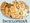

De: La Frikipedia, la enciclopedia extremadamente seria.
De: La Frikipedia, la enciclopedia extremadamente seria. De: La Frikipedia, la enciclopedia extremadamente seria.
|  | Este artículo proviene de la Inciclopedia |
Nota: las páginas con esta plantilla se añadirán a la categoría Inciclopedia.
Para usar esta plantilla no copies el código usa el código: {{Inciclopedia}}.
Autor(es):